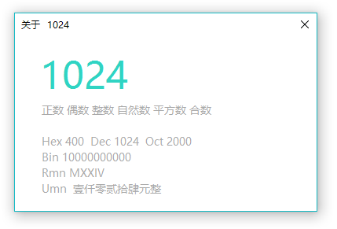

功能
这是一个基于ZXing.Net的二维码&条码工具，支持大多数码制。（需.NetFramework4.0及以上，Win8及以上自带）
如.Net版本为3.5，可以下载 Sode for .Net 3.5

Titans支持保留小数（最高9位），支持随机数，支持查看数字属性：整数、小数、正负、奇偶、自然数、平方数、立方数、质合数、完全数，以及转换进制、罗马数字，也可以转换为人民币大写。
当然，Titans也支持科学运算，如E+, E-, ^, abs, log, exp, tan, sin, cos, sgn, sqr, oct, int, fix, round, mod, and, or, xor, !, π, rd等。
不仅如此，Titans还别出心裁地使用了万位分隔符，使阅读数字更加简单。
除此之外，Titans还有更多实用的功能，在主界面右下角的“帮助”里即可查看。
下图是Titans的数字属性窗口
Titans从开发到现在已经一年多了，期间增加了数不清的功能，当然Bug也在无形中增加了，如果在使用过程中发现任何Bug，欢迎在评论区反馈。